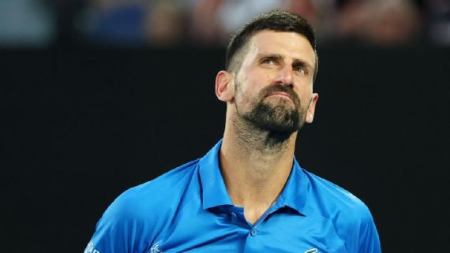

Novak Djokovic opinó sobre la actitud de Danielle Collins. Getty Images.
En la rueda de prensa post triunfo contra Tomas Machac por la tercera ronda, el ex N°1 del mundo respaldó a la estadounidense
Ahora bien, ¿qué fue lo que ocurrió? Frente a los abucheos que recibió luego de consumar la victoria ante la australiana Destanee Aiava, lanzó besos a todos en el Kia Arena y hasta llegó a darse una cachetada en las nalgas, algo que hizo estallar más aún a la tribuna.
En este sentido, Nole mostró su apoyo y agregó: "Lo manejó muy bien, no creo que yo hubiera sido tan educado". Este tipo de situaciones suele ser habitual cuando un jugador enfrenta a un tenista local, aunque allí está el desafío de mantener la calma.
Por otro lado, el de Belgrado, que en octavos enfrentará al checo Jiri Lehecka, cerró: "Es uno de los tenistas más en forma, con un saque que está infravalorado, porque gana muchos puntos con el servicio".
Toda la actividad del Abierto de Australia se sigue en VIVO por Disney+ Premium.
Francisco Cerúndolo, una de las esperanzas argentinas en Melbourne. Getty Images
Los días pasan y de a poco van cayendo los tenistas junto a sus ilusiones de poder seguir compitiendo en el primer Grand Slam de la temporada
En el séptimo día de acción del cuadro principal, sólo queda un tenista argentino representando la bandera celeste y blanca en lo más alto: Francisco Cerúndolo (31º del ranking ATP), que se benefició del retiro de Facundo Díaz Acosta (73º) en el duelo que mantuvieron por la segunda ronda.
Lo del mayor de los hermanos Cerúndolo es más importante aún ya que es el único sudamericano que sigue en carrera. Por la tercera rueda, se medirá entonces ante el australiano Alex de Miñaur este sábado, en el segundo turno de la Rod Laver Arena, no antes de las 00:00 (ARG).
Curiosamente este será el primer enfrentamiento entre ambos. De Miñaur, N°8 del mundo, viene de ganarle al estadounidense Tristan Boyer en sets corridos y está atravesando un gran momento en su carrera.El ganador de este partido se medirá en los octavos de final ante el vencedor del duelo entre Alex Michelsen y Karen Khachanov, que jugarán más temprano, desde las 21:00 (ARG) en la John Cain Arena.
Toda la actividad del Abierto de Australia se sigue en VIVO por Disney+ Premium.